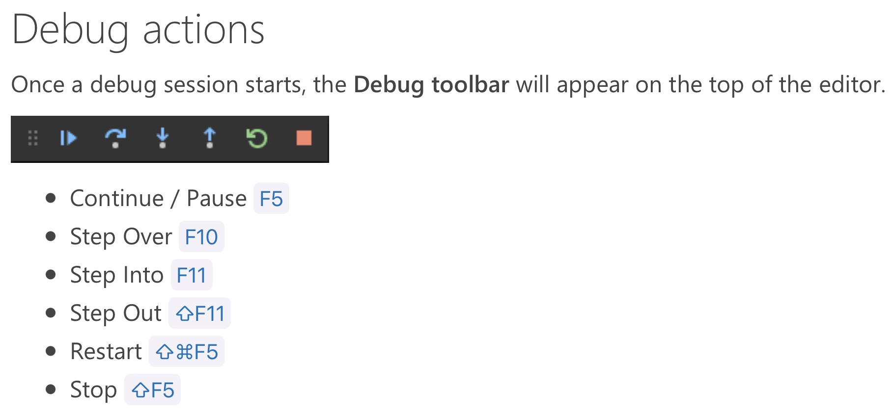

在macOS上用VSCode写C++代码 7 用VSCode调试Cpp代码¶
Intel Mac由于VS Code官方插件bug无法调试的说明¶
大家好，今天(210902)有同学跟我反映说教程中Intel Mac无法调试，具体表现为：按F5开启调试之后弹出终端，终端一片空白，没有任何输出；上滑后发现一些从来没见过的命令。我在自己的电脑上试了一下也出现了这样的情况。
通过查看GitHub microsoft/vscode-cpptools 仓库的issues，确认这是在扩展商店安装的C++扩展插件新版本v1.6.0 (August 24, 2021)的bug，工程师已经发现了这个问题并且在代码中修复，在下一个版本的更新中应该会解决这个问题。
最近需要进行调试的同学可以先将C++插件降级为1.5.1 (July 9, 2021)，降级方法如下：
- 打开
VS Code设置（⌘,）搜索c_cpp.update，将选项从Insiders更改为Default（关闭C++插件的自动更新） - 退出重启
VS Code - 打开插件商店，找到安装的扩展
C/C++，右键选择Install Another Version，选择v1.5.1 - 退出重启
VS Code，等待v1.5.1版本的C/C++扩展安装完毕即可。
问题描述：
https://github.com/microsoft/vscode-cpptools/issues/5079#issuecomment-903149903
https://github.com/microsoft/vscode-cpptools/issues/8008#issue-974146751
解决方案：
https://github.com/microsoft/vscode-cpptools/issues/8008#issuecomment-902336978
代码修复：
https://github.com/microsoft/MIEngine/pull/1201
前言¶
调试是什么，就是debug（查看Run -> Start Debugging）。debug是什么：你在写代码的时候会有一些地方写的有问题，这些问题就被称作bug。bug原意为虫子。de-前缀有去除的意思，debug就是指“去掉虫子”，也就是找代码中的错并改正。仔细看VS Code边栏的运行图标，发现就有一只虫子。
至于为什么debug被翻译为调试呢？大概就是说，你调一调（调整）代码，试着改一改代码，就把错误找出来了。
这一课会大量参考VS Code的官方文档，这是因为一份配置文件怎么写，不会有什么教程比官方文档写得更清楚了。是的，包括我现在正在录制的这一课的教程。我推荐你直接看官方的文档；不过，我还是有那么一丢丢自信比官网文档总结的好那么一点点（因为自己在配置的时候总会遇到一些坑，我会帮你跳过这些坑）。所以，你可以先听我讲的，如果觉得我哪里讲得不好，你可以移步官方文档查看对应的部分。
首先先简单看一看这些文档吧。
Important Docs¶
VS Code｜User Guide¶
User Guide｜Tasks¶
Tasks in VS Code can be configured to run scripts and start processes so that many of these existing tools can be used from within VS Code without having to enter a command line or write new code.
Workspace or folder specific tasks are configured from the tasks.json file in the .vscode folder for a workspace.
VS Code｜User Guide｜Integrate with External Tools via Tasks
在VS Code中可以自定义一些task（任务），这些任务会帮你自动化执行一些东西。任务的配置文件是tasks.json。我们希望定义一个编译程序的task，以后调试（debug）之前都会自动执行这个task。
User Guide｜Debugging¶
One of the key features of Visual Studio Code is its great debugging support. VS Code's built-in debugger helps accelerate your edit, compile and debug loop.
VS Code keeps debugging configuration information in a launch.json file located in a .vscode folder in your workspace (project root folder).
如果你需要debug，那么VS Code提供了这样的平台。debug的配置文件是launch.json。
实用技巧：输入输出重定向¶
VS Code｜User Guide｜Debugging | Redirect input/output to/from the debug target
这一点大家可以在这节课后自行了解，我觉得还是挺有用的一个知识点。
VS Code｜C++¶
C++｜Clang on macOS¶
VS Code | C++ | Using Clang in Visual Studio Code
（虽然这是专门为macOS写的文档，但我觉得这一篇实在误人子弟……至少我觉得两处不太妥当；还是看上面的那个User Guide｜Tasks和User Guide｜Debugging吧）
C++｜Debug¶
VS Code | C++ | Debug C++ in Visual Studio Code
（和User Guide｜Debugging相比没有什么新东西）
C++｜launch.json¶
The launch.json file is used to configure the debugger in Visual Studio Code.
VS Code Official Docs | Configuring C/C++ debugging
（很重要的文档，几乎说明了C++调试配置文件launch.json所有选项的含义）
tasks.json¶
注意：请尽量不要在任何关于代码和程序的地方出现空格。空格作为shell分隔命令的符号，在路径或文件名中出现空格可能会导致意想不到的后果。你可以将空格替换为下划线，或者直接删掉空格。如将VS Code的文件夹改名为VS_Code或VSCode
我所写的讲稿中Code Runner和编译对空格有很好的处理，但是调试总是处于两难的境地，有了空格就不能调试。很抱歉到现在才发现问题(210110)
{
// Tasks in VS Code can be configured to run scripts and start processes
// so that many of these existing tools can be used from within VS Code
// without having to enter a command line or write new code.
// Workspace or folder specific tasks are configured from the tasks.json file in the .vscode folder for a workspace.
"version": "2.0.0",
"tasks": [
{
// The task's label used in the user interface.
// Terminal -> Run Task... 看到的名字
"label": "g++ compile",
// The task's type. For a custom task, this can either be shell or process.
// If shell is specified, the command is interpreted as a shell command (for example: bash, cmd, or PowerShell).
// If process is specified, the command is interpreted as a process to execute.
"type": "shell",// shell: 输入命令
// The actual command to execute.
// 因为g++已经在环境变量中了，所以我们这里写命令就行不用写g++的绝对路径
"command": "g++",
"args": [
"${file}", // 表示当前文件（绝对路径）
// 在这里添加你还需要链接的.cpp文件
"-o",
"${fileDirname}/${fileBasenameNoExtension}.out",
"-W",
"-Wall",
"-g",
"-std=c++17",
],
// Defines to which execution group this task belongs to.
// It supports "build" to add it to the build group and "test" to add it to the test group.
// Tasks that belong to the build/test group can be executed by running Run Build/Test Task from the Command Palette (sft cmd P).
// Valid values:
// "build",
// {"kind":"build","isDefault":true},
// "test",
// {"kind":"test","isDefault":true},
// "none".
"group": {
"kind": "build",
"isDefault": true, // Defines if this task is the default task in the group.
},
// Configures the panel that is used to present the task's output and reads its input.
"presentation": {
// Controls whether the executed command is echoed to the panel. Default is true.
"echo": true, // 打开可以看到编译的命令，把命令本身输出一次
// Controls whether the terminal running the task is revealed or not. Default is "always".
// always: Always reveals the terminal when this task is executed.
// silent: Only reveals the terminal if the task exits with an error or the problem matcher finds an error.(会显示错误，但不会显示警告)
// never: Never reveals the terminal when this task is executed.
"reveal": "silent", // 控制在集成终端中是否显示。如果没问题那我不希望终端被切换、如果有问题我希望能看到编译过程哪里出错，所以选silent(可能always会好一些)
// Controls whether the panel takes focus. Default is false.
"focus": false, // 我的理解是：是否将鼠标移过去。因为这个是编译任务，我们不需要输入什么东西，所以选false
// Controls if the panel is shared between tasks, dedicated to this task or a new one is created on every run.
"panel": "shared", // shared:不同任务的输出使用同一个终端panel（为了少生成几个panel我们选shared）
// Controls whether to show the `Terminal will be reused by tasks, press any key to close it` message.
"showReuseMessage": true, // 就一句话，你想看就true，不想看就false
// Controls whether the terminal is cleared before executing the task.
"clear": false, // 还是保留之前的task输出信息比较好。所以不清理
},
// Other two choices: options & runOptions (cmd I to use IntelliSense)
"options": {
// The current working directory of the executed program or script. If omitted Code's current workspace root is used.
"cwd": "${workspaceFolder}",// 默认就是这个，删掉也没问题
},
// problemMatcher: 用正则表达式提取g++的输出中的错误信息并将其显示到VS Code下方的Problems窗口
// check: https://code.visualstudio.com/docs/editor/tasks#_defining-a-problem-matcher
"problemMatcher": {
"owner": "cpp",
"fileLocation": "absolute",
"pattern": {
"regexp": "^(.*):(\\d+):(\\d+):\\s+(warning|error):\\s+(.*)$",
"file": 1,
"line": 2,
"column": 3,
"severity": 4,
"message": 5,
},
},
// 官网教程 https://code.visualstudio.com/docs/cpp/config-clang-mac#_build-helloworldcpp
// 提到了另一种problemMatcher，但试了之后好像不起作用，甚至还把我原本的电脑搞出了一些问题……
},
{
"label": "Open Terminal.app",
"type": "shell",
"command": "osascript -e 'tell application \"Terminal\"\ndo script \"echo now VS Code is able to open Terminal.app\"\nend tell'",
"problemMatcher": [],
"group": "none",
}
]
}
从上到下讲……¶
（打开终端的task简单讲一下结构，讲到debug的时候出问题再回来看这个task）
Other two choices¶

总结¶
我们已经在tasks.json中创建了一个编译Cpp代码的task，接下来我们就要用编译出来的附带着调试信息的可执行文件去调试我们的代码。
（你会发现你自己也能在tasks.json里面自己写一个Code Runner了是吧？确实是这样（不过Code Runner的功能还是多一些，也支持别的语言，更方便一些）
launch.json¶
{
// One of the key features of Visual Studio Code is its great debugging support.
// VS Code's built-in debugger helps accelerate your edit, compile and debug loop.
// VS Code keeps debugging configuration information in a launch.json file
// located in a .vscode folder in your workspace (project root folder).
"version": "0.2.0",
"configurations": [
{
/* ------ these three options are mandatory ------ */
// The type of debugger to use for this launch configuration.
"type": "cppdbg", // C++ debug
// The request type of this launch configuration. Currently, launch and attach are supported.
// If you come from a server or desktop background,
// it's quite normal to have your editor launch your process for you,
// and your editor automatically attaches its debugger to the newly launched process.
// A launch configuration starts your app in debug mode before VS Code attaches to it.
// 大概意思是说，如果你开始debug的时候你的项目已经启起来了，那就attach（把debug的工具附加上去）
// 如果你开始debug的时机和你启动项目的时机是相同的，那就launch
"request": "launch", // debug的类型，launch表示启动，attach表示附加
// The reader-friendly name to appear in the Debug launch configuration drop-down.
"name": "C++ Debug", // 在VSCode侧边栏Run那里看到的名字（可以随便起）
/* ------ some optional attributes available to all launch configurations ------ */
// To launch a task before the start of a debug session, set this attribute to the label of a task specified in tasks.json.
"preLaunchTask": "g++ compile", //在调试之前要进行的工作 compile是在 tasks.json 的编译任务里面的label
/* ------ Many debuggers support some of the following attributes: ------ */
// executable or file to run when launching the debugger
// ！！不要在程序和代码的路径及文件名中出现空格！！否则无法调试（我尝试解决这个问题，但真的无法解决）
"program": "${fileDirname}/${fileBasenameNoExtension}.out", // debug的对象(-g编译出来的二进制文件)，需要和.vscode/tasks.json中生成的可执行文件一致
// arguments passed to the program to debug
"args": [], // 比如运行你的程序添加输入参数（argc/argv），需要在这里添加
// Environment variables to add to the environment for the program
"environment": [], // 放置环境变量
// current working directory for finding dependencies and other files
"cwd": "${workspaceFolder}",
// break immediately when the program launches
"stopAtEntry": false,
// If true, a console is launched for the debuggee.
// If false, on Linux and Windows, it will appear in the Integrated Console.
"externalConsole": true,
// 为true则会打开系统终端在其中进行交互
// 如果为 true，则为调试对象启动控制台。如果为 false，它在 Linux 和 Windows 上会显示在集成控制台中
// macOS不适用：https://code.visualstudio.com/docs/cpp/launch-json-reference#_externalconsole
/* ------ Customizing GDB or LLDB ------ */
// Indicates the debugger that VS Code will connect to. Must be set to gdb or lldb.
// 但是macOS只安装了llbd（有可能是安装命令行工具的时候安装的），那就用lldb吧
"MIMode": "lldb",
}
]
}
从上到下讲……¶
hello_world.cpp¶
#include <cstdio>
int main() { printf("\n\nHello, world!\n\n"); }
直接F5开始调试（如果你设置了多个launch可能需要在边栏Run哪里勾选相应的）
你会发现出现问题，终端没有Hello, world!。这是什么原因呢？？？
GitHub issue｜VS Code因权限无法打开系统终端（大概1/2的地方）

回到tasks.json ⇧⌘P调出VS Code的命令窗口，搜索task，点击Tasks: Run Task，选择Open Terminal.app；给VS Code打开终端的权限，解决问题
调整终端和VS Code的位置¶
长按绿色的按钮，将终端放在屏幕左边，VS Code放在屏幕右边。
在调试多次之后可以使用快捷键：⇧⌘W关闭全部。或直接⌘Q退出终端
使用VS Code的集成终端？¶
如何在调试的时候不使用系统的终端而使用VS Code的集成终端？
你肯定觉得这么做很麻烦，Code Runner都可以让提示信息出现在集成终端，那我调试代码也把程序的输出放到集成终端可以吗？很遗憾，这件事情在macOS上做不到。
当时GitHub issues上也有人问过这件事情。
GitHub｜issue: Open the externalConsole inside the VSCode Terminal in OSX
（查看我的回答；图片会挂是因为GitHub的服务器在国外……）非常遗憾，也许之后能支持，但是现在not available。（真的很可惜）
VS Code官方文档｜Configuring C/C++ debugging之externalConsole

调试举例¶
我想了好久也没找到简单又有点意思的例子……真正要用到debug的时候我觉得应该是数据结构与算法的题目，但我这个只是简单教程，我也不想把数算题扯进来。所以真的很抱歉！这一块的调试大家在自己写的程序遇到bug的时候自行体验……
#include <cstdio>
int twoSum(int a, int b) { return a + b; }
int fourSum(int a, int b, int c, int d) { return twoSum(a, b) + twoSum(c, d); }
int main() { printf("Addition = %d\n", fourSum(1, 2, 3, 4)); }
其他调试技巧¶

大家自己体验一下，我就不做过多的解释了。
补充¶
需要新建工作区吗？¶
我的想法是希望你在一个文件夹Cpp中写所有的Cpp代码，这在学习Cpp和编写简单Cpp代码时是非常合适的（我这么做发现很方便）。但是请注意：如果你用VS Code来做一个C++项目，那最好还是另开一个新的文件夹；毕竟在VS Code中，一个文件夹就是一个项目。（但其实在我们现在用的这个Cpp文件夹新建一个文件夹也足够了）
有些其他教程里面的c_cpp_properties.json是干什么的？¶
(210224补充)
我们可以直接查看VS Code官网关于这份文件的文档：
VS Code Docs | c_cpp_properties.json reference
VS Code Docs | Customizing default settings
之前没了解过这个文件，看了文档之后，我感觉c_cpp_properties.json仅仅是用来替换掉在设置或者是settings.json中出现的 C_Cpp.default.*的这些选项，把这些设置提了出来放到这个文件里面，这个文件也会对这些设置提供一些好的语法，让你更方便的设置这些项；也可以在tasks.json和launch.json中调用这些配置。
如果不需要设置C_Cpp.default.*里面的选项，那么就不需要这个c_cpp_properties.json。
我的教程直接从命令行入手了，这里面的设置我都直接用g++编译器的参数代替了，所以不需要设置这些选项。
总结¶
这节课我们主要学习了如何写两份配置文件：tasks.json可以用配置任务实现自动化；launch.json用来配置VS Code调试的方法。现在，如果你只是要执行你的代码，⌘R直接用插件Code Runner解决问题，非常快。如果你需要调试，那就打上断点，然后F5（或者触控栏上的播放按钮）；由于可能需要多次打开调试，这时你需要将终端和VS Code分屏获得好一些的体验。
上节课说这是最后一节课，但我之后应该还会录制两节课。一节是课程回顾，会讲讲这门课的设计思路，同时也会安利一些我自己用的插件，顺便也推荐一些可以深入学习的地方。另一节准备做一个极速版的教程，因为对于一些心急的人来说，可能总共加起来快5个小时的视频教程还是有一些长；另外对于认真听完课程的同学，可能也需要一个快速回顾如何配置编程环境的总结性视频。
如果你跟着这六节课（除去最开始的一节）走下来，我相信你会少走很多弯路。以后写代码也会觉得很舒适。还记得我在第一节课说的课程目标吗？我希望这份教程能让一年半前刚刚拿着mac入门Cpp编程的我少一年的迷茫，我想我应该做到了这一点。
这一节课就到这里了！感谢大家听到现在，希望大家能通过这几节课的教程有所收获！